Computer Network
A computer network is a group of two or more computers that are connected either by cables (wired) or WiFi (wireless) with the purpose of transmitting, exchanging, or sharing data and resources. Computer networks commonly help endpoint users share resources and communicate. They commonly appear all over the place, such as homes, offices and government administrations. Computer networks enable the usage and sharing of any number of applications and services, including emails, video, audio and plenty of other types of data, over the internet.
Characteristics of a computer network
- Share resources from one computer to another.
- Create files and store them in one computer, access those files from the other computer(s) connected over the network.
- Connect a printer, scanner, or a fax machine to one computer within the network and let other computers of the network use the machines available over the network.
Components of a Computer Network
Computer networks components comprise both physical parts as well as the software required for installing computer networks, both at organizations and at home. The hardware components are the server, client, peer, transmission medium, and connecting devices (routers, switch). The software components are operating system and protocols.
I. Hardware components
- Servers: Servers are high-configuration computers that runs operating system and hold data that can be shared over a computer network. They manage the resources of the network. Servers can be of various kinds: file servers, database servers, print servers etc. 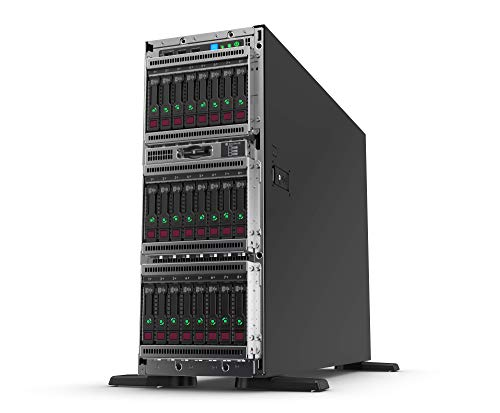
- Clients: Clients are computers that request and receive service from the servers to access and use the network resources.
- Peers: Peers are computers that provide as well as receive services from other peers in a workgroup network.
- Transmission Media: Transmission media are the channels through which data is transferred from one device to another in a network. All computers in a computer network are connected with each other through a transmission media such as wires, optical fibre cables, coaxial cables etc. 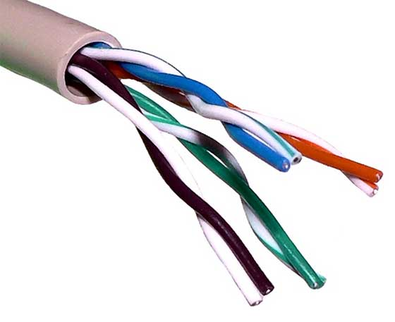
- Network Interface Card (NIC): NIC is a hardware component used to connect a computer with another computer onto a network. By means of a unique hardware addresses (MAC address) programmed on the card chip, the data-link protocol uses these addresses to detect other systems on the network so that it can transfer data to the correct destination via the wired or wireless network. It can support a transfer rate of 10,100 to 1000 Mb/s. There are two types of NIC: Wired NIC and Wireless NIC. Wired NIC is present inside the motherboard. Cables and connectors are used with wired NIC to transfer data. The wireless NIC contains the antenna to obtain the connection over the wireless network. For example, laptop computer contains the wireless NIC. 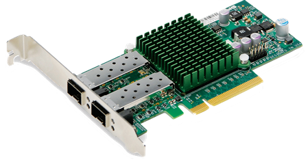
- Hub: Hub acts as a device that connects all the computer in a network to each other. When computer requests for some information from a network, it first sends the request to the Hub through cable. Hub will broadcast this request to the entire network. All the devices will check whether the request belongs to them or not. If not, the request will be dropped. This consumes more bandwidth on the network and limits the amount of communication. Currently Hubs are almost obsolete and superseded by more advanced network communication equipment such as Switches and Routers. 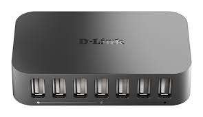
- Switch: A switch is a hardware device that connects multiple devices on a computer network. Switch is like a smart Hub made in with advanced features, like the ability to form tables that keep updates about all the computer or device, and on which switch port it is on. Using the physical device addresses in each incoming messages, it delivers the message to the correct destination or port. Therefore, we can say that switch provides a direct connection between the source and destination. It increases the speed of the network. 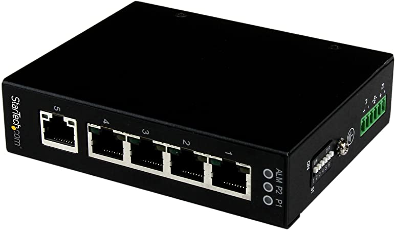
- Router: A router is a hardware device which is used to connect a LAN with an internet connection. It is used to receive, analyze and forward the incoming packets to another network. Routers are actually smart switches in that they are conscious of other networks. They can dynamically update their routing information, discovering when a route to a network is down and finding if another route is accessible. Routers forwards the packet based on the information available in their routing table. they determine the best path from the available paths for the transmission of the packet. 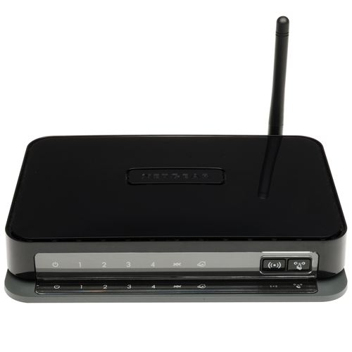
- Modem (Modulator/Demodulator): A modem is a hardware device that allows the computer to connect to the internet over the existing telephone line. A modem is not integrated with the motherboard rather than it is installed on the PCI slot found on the motherboard. It converts the digital data into an analog signal over the telephone lines. 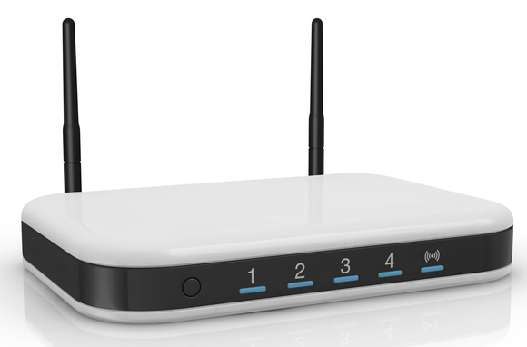
II. Software Components
- Networking Operating System: Network Operating Systems is typically installed in the server and facilitate workstations in a network to share files, database, applications, printers etc.
- Protocol Suite: A protocol is a rule or guideline followed by each computer for data communication. Protocol suite is a set of related protocols that are laid down for computer networks. The two popular protocol suites are: OSI Model ( Open System Interconnections) and TCP / IP Model
Types of Computer Network
There are many different types of network, which can be used for different purposes and by different types of people and organization. Here are the most common and widely used computer network types:
- Local Area Network (LAN): Local Area Network is a group of computers connected to each other in a small area such as a building, office, allowing them to share data, files, and resources. LAN is used for connecting two or more personal computers through a communication medium such as twisted pair, coaxial cable, and so on. It is less costly as it is built with hardware such as hubs, network adapters, and ethernet cables, which are inexpensive. Typically, LANs are privately owned and managed. Local Area Network provides higher security. Data is transferred at an extremely faster rate.
- Wireless Local Area Network (WLAN): A WLAN is just like a LAN but connections between devices on the network are made wirelessly.
- Personal Area Network (PAN): A personal area network is a network that is based on an individual's workspace. The individual's device is the center of the network, with other devices connected to it. Personal computer devices that are used to develop the personal area network are the laptop, mobile phones, media player and play stations. here are also wireless personal area networks.
- Home Area Network (HAN): A home area network connects devices within a home environment. It might include personal computers, tablets, smartphones, printers, TVs and other devices.
- Storage Area Network (SAN): A SAN is a specialized network that provides access to block-level storage—shared network or cloud storage that, to the user, looks and works like a storage drive that’s physically attached to a computer.
- Campus Area Network (CAN): A CAN is also known as a corporate area network. It is a LAN or set of connected LANs which is used by a government agency, university, corporation or similar organization and is typically a network across a set of buildings that are close together.
- Metropolitan Area Networks (MAN): A metropolitan area network is a network that covers a larger geographic area by interconnecting a different LAN to form a larger network. In MAN, various LANs are connected to each other through a telephone exchange line. MANs are typically larger than LANs but smaller than WANs. Cities and government entities typically own and manage MANs. The most widely used protocols in MAN are RS-232, Frame Relay, ATM, ISDN, OC-3, ADSL, etc.
- Wide Area Network (WAN): A Wide Area Network is a network that extends over a large geographical area such as states or countries. A Wide Area Network is not limited to a single location, but it spans over a large geographical area through a telephone line, fibre optic cable or satellite links. The internet is the largest WAN, connecting billions of computers worldwide. A Wide Area Network is widely used in the field of Business, government, and education.
Network Topology
Network topology refers to the manner in which the links and nodes of a network are arranged to relate to each other. A network node is a device that can send, receive, store, or forward data. A network link connects nodes and may be either cabled or wireless links. Think of your network as a city, and the topology as the road map. Just as there are many ways to arrange and maintain a city, there are several ways to arrange a network. Topologies are categorized as either physical network topology, which is the physical signal transmission medium, or logical network topology, which refers to the manner in which data travels through the network between devices, independent of physical connection of the devices.
Logical network topology examples include twisted pair Ethernet, which is categorized as a logical bus topology, and token ring, which is categorized as a logical ring topology. Physical network topology examples include star, mesh, tree, ring, point-to-point, circular, hybrid, and bus topology networks, each consisting of different configurations of nodes and links.
Types of Network Topology
There are several different logical and physical network topologies from which administrators can choose to build a secure, robust, and easily maintainable topology. The most popular configurations include:
1. Bus Topology
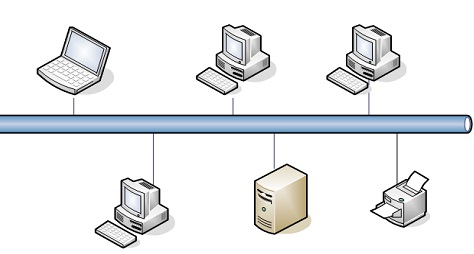Also known as backbone network topology. A bus topology orients all the devices on a network along a single cable running in a single direction from one end of the network to the other. Data flow on the network also follows the route of the cable, moving in one direction. Bus topologies are a good, cost-effective choice for smaller networks because the layout is simple, allowing all devices to be connected via a single coaxial or RJ45 cable. If needed, more nodes can be easily added to the network by joining additional cables.
However, because bus topologies use a single cable to transmit data, they’re somewhat vulnerable. If the cable experiences a failure, the whole network goes down, which can be time-consuming and expensive to restore, which can be less of an issue with smaller networks. Furthermore, data is “half-duplex,” which means it can’t be sent in two opposite directions at the same time, so this layout is not the ideal choice for networks with huge amounts of traffic.
2. Mesh Topology
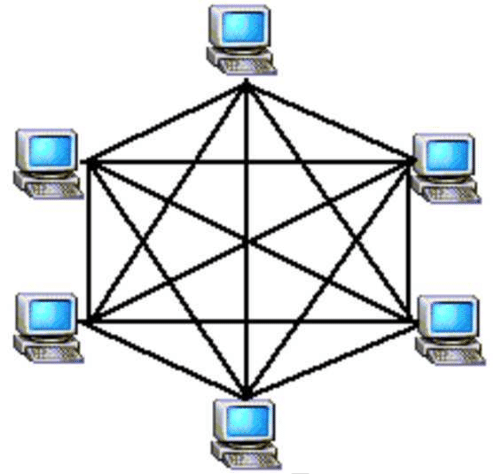A dedicated point-to-point link connects each device on the network to another device on the network, only carrying data between two devices. Mesh networks can be full or partial mesh. Partial mesh topologies are mostly interconnected, with a few nodes with only two or three connections, while full-mesh topologies are fully interconnected. The web-like structure of mesh topologies offers two different methods of data transmission: routing and flooding. When data is routed, the nodes use logic to determine the shortest distance from the source to destination, and when data is flooded, the information is sent to all nodes within the network without the need for routing logic. Mesh topologies are reliable and stable, and the complex degree of interconnectivity between nodes makes the network resistant to failure. For instance, no single device going down can bring the network offline.
Mesh topologies are incredibly labor-intensive. Each interconnection between nodes requires a cable and configuration once deployed, so it can also be time-consuming to set up. As with other topology structures, the cost of cabling adds up fast, and to say mesh networks require a lot of cabling is an understatement.
3. Ring Topology
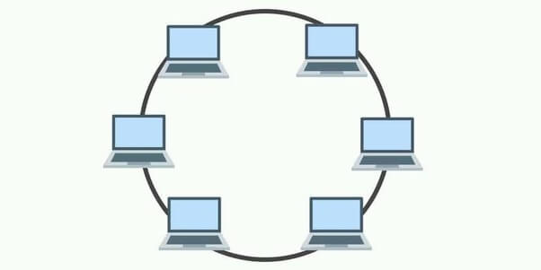Ring topology is where nodes are arranged in a circle (or ring). The data can travel through the ring network in either one direction or both directions, with each device having exactly two neighbors. Since each device is only connected to the ones on either side, when data is transmitted, the packets also travel along the circle, moving through each of the intermediate nodes until they arrive at their destination. If a large network is arranged in a ring topology, repeaters can be used to ensure packets arrive correctly and without data loss. Only one station on the network is permitted to send data at a time, which greatly reduces the risk of packet collisions, making ring topologies efficient at transmitting data without errors. It is cost-effective and inexpensive to install, and also relatively easy to identify issues or misconfigurations on the network.
Even though it’s popular, a ring topology is still vulnerable to failure without proper network management. Since the flow of data transmission moves unidirectionally between nodes along each ring, if one node goes down, it can take the entire network with it. That’s why it’s imperative for each of the nodes to be monitored and kept in good health. Nevertheless, even if you’re vigilant and attentive to node performance, your network can still be taken down by a transmission line failure. The entire network must be taken offline to reconfigure, add, or remove nodes. And while that’s not the end of the world, scheduling downtime for the network can be inconvenient and costly.
4. Star Topology

Star topology is the most common network topology that connects each device in the network to a central hub. Devices can only communicate with each other indirectly through the central hub. Acting as a server, this central hub manages data transmission as information sent from any node on the network has to pass through the central one to reach its destination, and functions as a repeater, which helps prevent data loss. Star topologies are common since they allow you to conveniently manage your entire network from a single location. Because each of the nodes is independently connected to the central hub, should one go down, the rest of the network will continue functioning unaffected, making the star topology a stable and secure network layout. Additionally, devices can be added, removed, and modified without taking the entire network offline. The structure of the star topology uses relatively little cabling to fully connect the network, and the simplicity of the network design makes life easier for administrators, too, because it’s easy to identify where errors or performance issues are occurring.
On the flipside, if the central hub goes down, the rest of the network can’t function. But if the central hub is properly managed and kept in good health, administrators shouldn’t have too many issues. The overall bandwidth and performance of the network are also limited by the central node’s configurations and technical specifications, making star topologies expensive to set up and operate.
5. Hybrid Topology
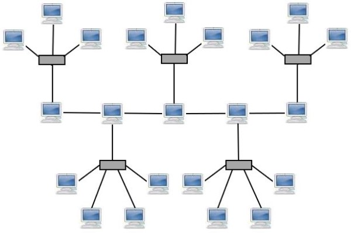Any combination of two or more topologies is a hybrid topology. Hybrid structures are most commonly found in larger companies where individual departments have personalized network topologies adapted to suit their needs and network usage. The main advantage of hybrid structures is the degree of flexibility they provide, as there are few limitations on the network structure itself that a hybrid setup can’t accommodate.
However, each type of network topology comes with its own disadvantages, and as a network grows in complexity, so too does the experience and know-how required on the part of the admins to keep everything functioning optimally. There’s also the monetary cost to consider when creating a hybrid network topology.
6. Tree Topology
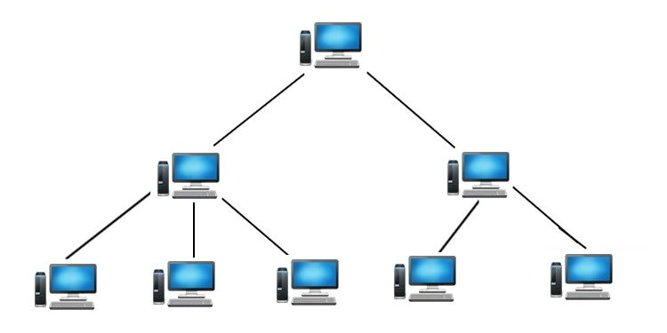This topology consists of a parent-child hierarchy in which star networks are interconnected via bus networks. Nodes branch out linearly from one root node, and two connected nodes only share one mutual connection. Because the tree topology structure is both extremely flexible and scalable, it’s often used for wide area networks to support many spread-out devices. Combining elements of the star and bus topologies allows for the easy addition of nodes and network expansion. Troubleshooting errors on the network is also a straightforward process, as each of the branches can be individually assessed for performance issues.
Because of the hierarchical complexity and linear structure of the network layout, adding more nodes to a tree topology can quickly make proper management an unwieldy, not to mention costly, experience. Tree topologies are expensive because of the sheer amount of cabling required to connect each device to the next within the hierarchical layout.
Advantages of Computer Network
- Files can easily be shared between users.
- It enhances communication and availability of information.
- It is highly flexible.
- Almost everyone can afford the benefits of a computer network.
- Computer networks make it easier to collaborate on projects.
- Computer networks can transfer enormous file sizes in seconds.
- It offers a personalized experience.
- Sharing devices such as printers saves money.
- Data is easy to backup as all the data is stored on the file server.
- It provides security, as users cannot see other users' files unlike on stand-alone machines.
Disadvantages of Computer Network
- Purchasing the network cabling and file servers can be expensive.
- Viruses can spread to other computers throughout a computer network.
- Managing a large network is complicated, requires training and a network manager usually needs to be employed.
- There is a danger of hacking, particularly with wide area networks. Security procedures are needed to prevent such abuse, eg a firewall.
- There are several ways to exploit the vulnerabilities of a computer network.